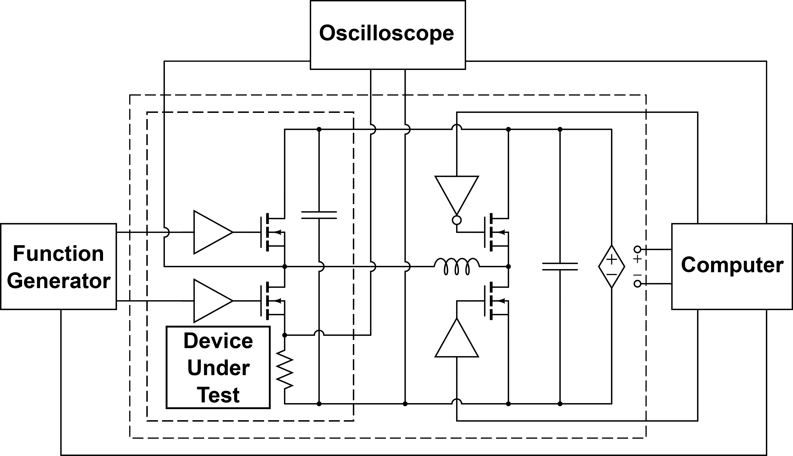

The Automated Double Pulse Test toolbox allows users to run the double pulse test (DPT) completely automated. The toolbox can control all aspects of the double pulse test including oscilloscope setup, data capture, and full control of all other lab equipment. The toolbox is highly configurable and will allow the user to control as much or as little of its operation as desirable.
There are a number of requirements that must be taken care of before the toolbox can be used. These are separated into software and hardware requirements.
All instruments that will be controlled by the toolbox must be able to connect to the computer running MATLAB. The most common way is USB; however, ethernet, serial, and all other interfaces supported by VISA are also possible. Furthermore the instrument must be able to communicate with the Keysight, Tektronix, or National Instruments VISA library as these are the only choices in MATLAB. An instrument does not necessarily need to be manufactured by one of these vendors to be compatible with their implementation of VISA as it is intended to be a universal standard.
Additionally, all instruments should be updated to their most recent firmware version. The toolbox has been known to fail when used with instruments running old firmware.
This version of the software has been tested with the following Instruments and is verified to work with them. As many of the SCPI commands are somewhat similar across different devices and vendors other devices may also be compatible. The program can be updated to support other devices using the methods detailed in the SCPI_Instruments Documentation.
Note that as of August 3rd, 2016 only the Bus voltage supply can be controlled. Control of the supply for control circuitry is planned, but not yet implemented.
The hardware setup is not rigid as the software setup allows the program to be flexible; However, without good reason otherwise the default setup is recommended and documented below.

The Oscilloscope, Function Generator, and Bus Power supply can all be connected to the computer with any interface as long as they can be detected by the VISA Drivers. The best way to check connectivity to VISA Driver is to use the Keysight IO connection manager and use its auto detection feature. It will automatically find and identify most USB and Ethernet Devices; however, some will require extra setup if they are setup as a USB Serial interface. Some devices may also require separate USB Drivers from the manufacturer.
The probe connections to the oscilloscope can be made to any channel as they are configured in the software setup. If the probes add an external gain to the signal extra configuration will be configured in the software. The function generator should be setup with DUT gate driver connected to channel 1 and the high side gate driver connected to channel 2 if high side control is required.
Currently the toolbox does not support measuring the results from the high side device.
Before moving on to the software setup there is important information that should be noted about the hardware setup.
VISA Addresses can be found in the Keysight IO software.
Once the software is installed and the hardware is connected to the computer, there is still some additional setup required before the program can be run. This setup is done by creating a settings object using the DPTSettings class.
The simplest version of the settings object can be created using the following code contained in the SimpleSettings.m file:
function [ settings ] = SimpleSettings()
dpt_settings = DPTSettings;
% Double Pulse Test Settings
%% Test Specific Settings
dpt_settings.busVoltages = [100, 200, 300, 400];
dpt_settings.loadCurrents = [3, 5, 10, 20, 30];
dpt_settings.currentResistor = 102E-3;
dpt_settings.loadInductor = 720E-6;
dpt_settings.maxGateVoltage = 10;
dpt_settings.gateLogicVoltage = 5;
%% Instrument Setup
% VISA Resource Strings
dpt_settings.scopeVisaAddress = 'USB0::0x0699::0x0502::C051196::0::INSTR';
dpt_settings.FGenVisaAddress = 'USB0::0x0957::0x2307::MY50000715::0::INSTR';
%% Channel Setup
% Channel Numbers
dpt_settings.channel.VDS = 1;
dpt_settings.channel.VGS = 2;
dpt_settings.channel.ID = 4;
dpt_settings.channel.IL = 3; % Comment out if not measuring
%% Vertical Settings
dpt_settings.calcDefaultScales;
settings = dpt_settings;
endEach setting is explained in detail in the DPTSettings documentation, but the short version is below:
| Setting | Description |
|---|---|
busVoltages |
A Vector of the desired test Bus Voltages |
loadCurrents |
A Vector of the desired test Load Currents (Each current will be tested at all bus voltages) |
currentResistor |
The value of the current sensing resistor used to measure the drain current. |
loadInductor |
The value of the load inductor. |
maxGateVoltage |
The expected maximum value of the gate voltage. |
gateLogicVoltage |
The logic voltage to be sent to the gate driver. |
scopeVisaAddress |
The VISA address of the Oscilloscope. |
FGenVisaAddress |
The VISA address of the Function Generator. |
channel.VDS |
The oscilloscope channel measuring . |
channel.VGS |
The oscilloscope channel measuring . |
channel.ID |
The oscilloscope channel measuring . |
channel.IL |
The oscilloscope channel measuring . Remove or comment out this line if not measuring load current. |
There are also many more settings that can be adjusted and they are also
documented in the DPTSettings documentation.
It is very important that the hardware and software setups are verified to be accurate. If, for example, the load inductor value is set incorrectly the current sent through it could well exceed the capability of the device / circuit.
Once you have verified that the setup is correct add the following line before the settings = dpt_settings; line:
dpt_settings.setupVerified = true;Once the software settings have been configured and verified, the test can be run. Keep in mind that with the default settings, once the test starts, it will continue until finished without any additional user input required. The toolbox contains settings that will prompt the user before carrying out important actions as well as settings that allow the user to control the Bus Voltage Supply themselves; however, these settings are turned off by default. More information about them can be found in the DPTSettings documentation.
The test can be run by sending the following command from a script or from the MATLAB command window:
Double_Pulse_Test(SimpleSettings)Where SimpleSettings is either a function that returns a DPTSettings object as shown in the earlier or is an actual DPTSettings object.
By default the results are stored in the Measurements directory in the form of several .mat files. For each bus voltage and load current pair there are two .mat files that each contain one DoublePulseResults object. The first of these .mat files is for the measurement with four channels on and the second is for results with two channels on. They are named in the format {Bus_Voltage}V_{Load_Current}A_{Num_Channels}CH.mat
There is also a SweepResults object stored in the sweep_results.mat file as well as a DPTSettings object stored in the Measurement_Settings.mat file.
These objects can be loaded into the MATLAB workspace with the load(file_name.mat) command. See their respective documentation pages for more details on usage.